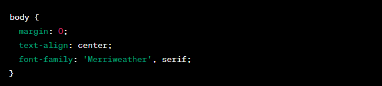
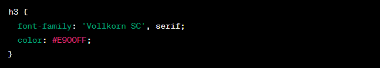
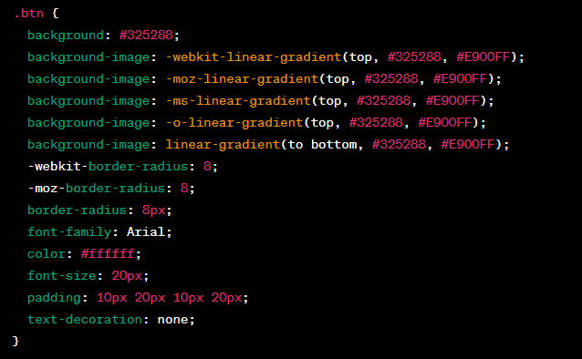

CSS code is a style guide that defines the appearance and layout of various elements on a webpage. Here I will go through each section I used to create the main webpage, in order to understand what everything does:
This section sets the styles for the `<body>` element. It sets the margin to 0, aligns the text to the center, and specifies the font family as `'Merriweather'` or a generic serif font if `'Merriweather'` is not available.
This section styles an element with the class `.nav`, which is likely used for navigation menus. It sets the display property to `inline-flex`, meaning the navigation items will be arranged in a row. It also removes the default list styles and aligns the text to the center within the navigation container.
This section styles `<h1>` headings. It adds a top margin of 50 pixels and a top padding of 150 pixels. It sets the font family to `'Sacramento'`, which is a cursive font, and the font size to 7.625rem (approximately 122 pixels). The text color is set to `#325288`.
This section styles `<h2>` headings. It sets the font family to `'Vollkorn SC'` or a generic serif font, the font size to 2.5rem (approximately 40 pixels), the text color to `#325288`, and the font weight to normal.
This section styles `<h3>` headings. It sets the font family to `'Vollkorn SC'` or a generic serif font and the text color to `#E900FF`.
This section styles `<p>` paragraphs. It sets the line height to 2, which means double spacing between lines, and the text color to `#40514E`.
This section styles `<hr>` horizontal rules. It sets a dotted border with a color of `#E900FF` and a thickness of 6 pixels. It removes the bottom border to create a "dashed" effect. The width is set to 10% of the parent container, and it has a top and bottom margin of 100 pixels and is horizontally centered using auto margins.
This section styles <a> links. It sets the text color to #E900FF, the font family to 'Vollkorn SC' or a generic serif font, and adds a margin of 10 pixels at the top and bottom and 20 pixels at the left and right. It also removes the default underline decoration.
This section styles the hover effect for <a> links. When hovering over a link, it changes the text color to #325288.
This section styles an element with the class .middle-container. It adds a top padding of 100 pixels.
This section styles an element with the class .top-cloud. It positions the element absolutely, with a right offset of 40 pixels and a top offset of 10 pixels.
This section styles an element with the class .bottom-cloud. It positions the element absolutely, with a left offset of 60 pixels and a top offset of 250 pixels.
This section styles an element with the class .skill-row. It sets the width to 50% of the parent container, centers it horizontally using auto margins, aligns the text to the left, and sets the line height to 2.
This section styles an element with the class .skill-row2. It has the same styles as .skill-row, setting the width to 50%, centering it horizontally, aligning the text to the left, and setting the line height to 2.
This section styles an element with the class .binary. It sets the width to 25% of the parent container, floats it to the left within its container, and adds a right margin of 30 pixels.
This section styles an element with the class .idea. It sets the width to 25% of the parent container, floats it to the right within its container, and adds a left margin of 30 pixels.
This section styles elements with the class .btn, which are likely buttons. It sets a gradient background color from #325288 to #E900FF. The border radius is set to 8 pixels for rounded corners. The font family is set to Arial, the text color is white (#ffffff), the font size is 20 pixels, and it has padding of 10 pixels on the top and bottom, and 20 pixels on the left and right. It also removes the default underline decoration.
This section styles the hover effect for elements with the class .btn. When hovering over the button, it changes the background color to #fc3ce6 and removes the underline decoration.
This section styles an element with the class .creativity. It sets the width to 30% of the parent container and centers it horizontally using auto margins.
This section styles an element with the class .bottom-container. It sets the background color to #D9D7F1, the width to 100% of the parent container, and adds padding of 50 pixels at the top, 0 pixels at the sides, and 20 pixels at the bottom. The text is aligned to the center, and the line height is set to 2.
This section styles elements with the class .name. It sets the text color to #8946A6, the font size to 0.75rem (approximately 12 pixels), and adds padding of 20 pixels at the top and bottom.